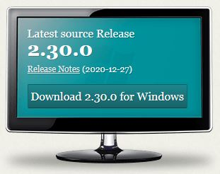
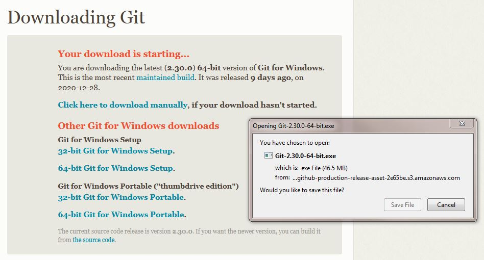
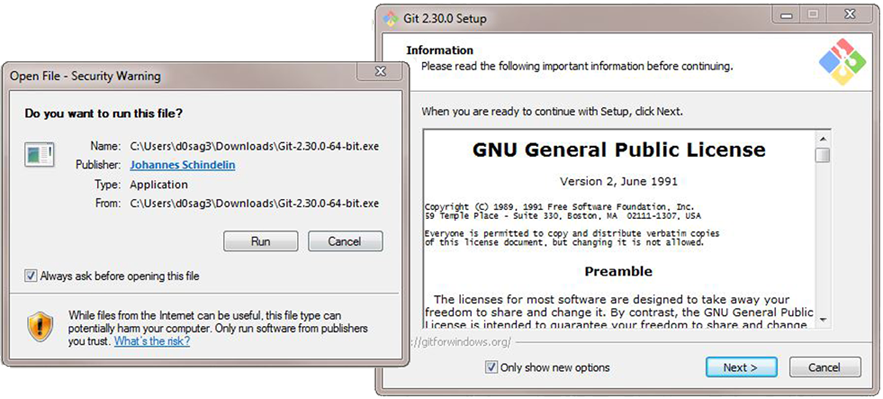
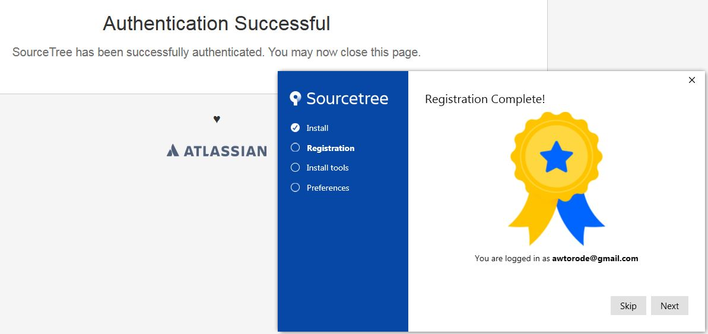
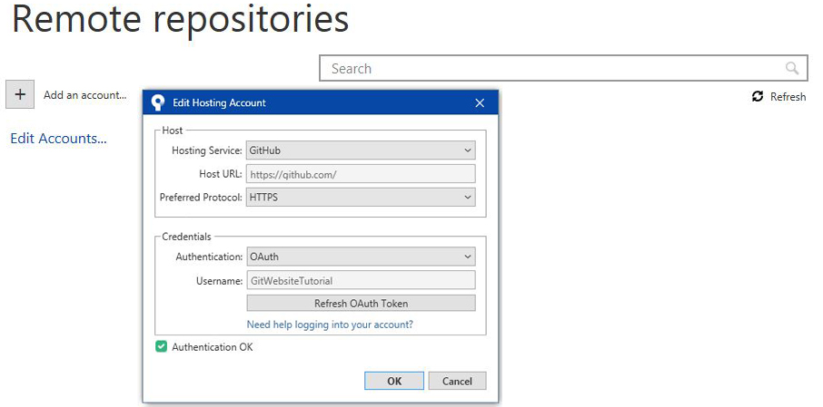
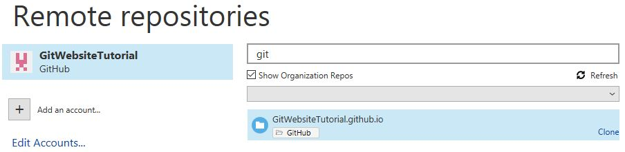
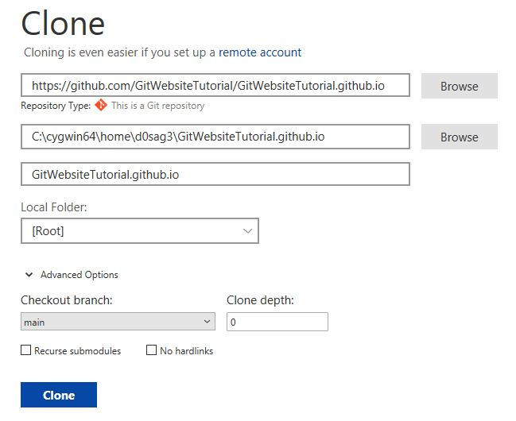
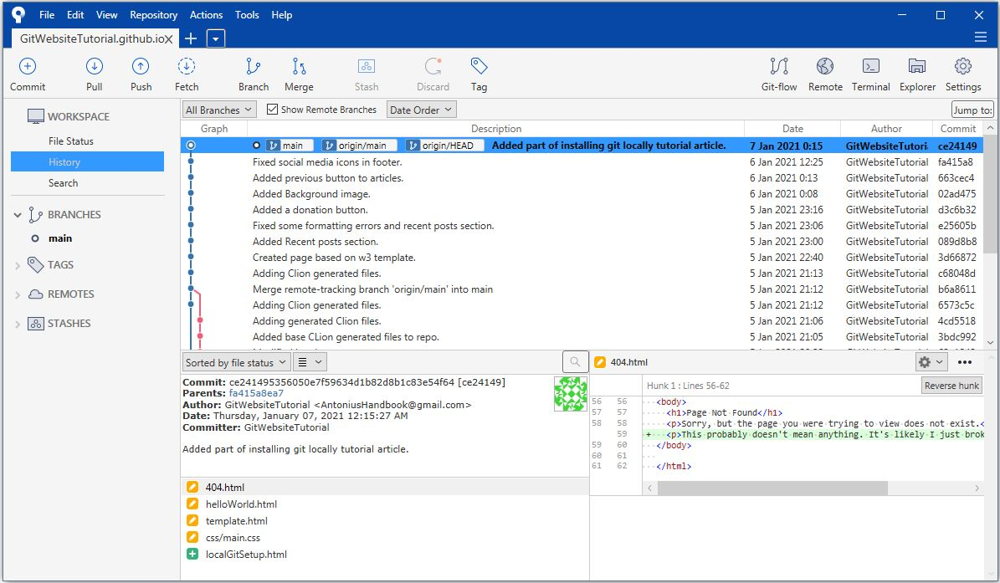
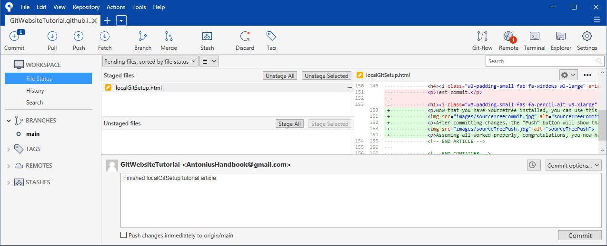
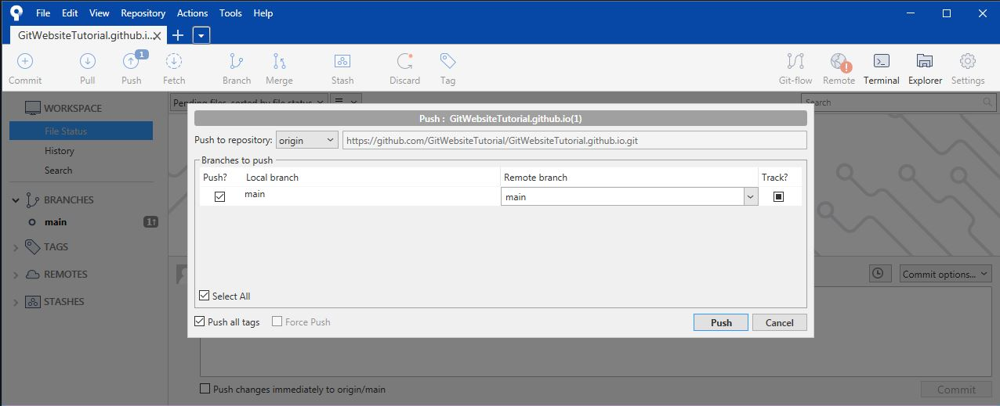

Written by: Antonius Torode - 1/8/2021
Before beginning: Make sure you have a healthy snack! A bowl of some fresh nuts or cut up vegetables is great to have while working. That way you can stay focused and the urge of hunger does not creep up on you. That, and healthy snacks can help you think and concentrate! I would also recommend some non-distracting music to play in the background. One of my favorites for things like this can be found at this link: super cool coding music (the music changes for each article!).
In the last tutorial, we covered setting up an account on github to manage and store your files. You technically can simple stick to using that method, updating through the website, and even dragging and dropping new files to upload them directly. Although possible, I believe (once set up) that being able to work locally on your computer is significantly more productive and allows you to have much more control and power over what you are creating. For this purpose, this page will walk through the steps of setting up git locally so you can use the tools you desire for creating your website (such as CLion, Dreamweaver, Notepad++, etc) easily. You will essentially have all the files on your computer, and when you are happy with them, then you can push them to the github server for the public to see.
As stated on their website, "Git is a free and open source distributed version control system designed to handle everything from small to very large projects with speed and efficiency." Git allows you to take files you are working on, have multiple versions, revert to older versions, manage current versions, and keep consistent files across all of your workspaces and machines. For the purposes of our need, git is easily integrated to use with github, and allows us to update a github.io webpage with ease! You can visit the git website to learn more about it, view documentation, and more on the official git website https://git-scm.com/. Git is a powerful industry tool that is capable of many things. Although at times it can seem overwhelming or challenging, it is very simple to use for the purposes I will outline. Do not be overwhelmed.
This page is set up in parts for various operating systems. When following this tutorial, ensure that you are looking at the sections with the heading of the operating system you are using (i.e. Linux, Windows, Mac, etc).
Head over the the git homepage located at https://git-scm.com/. Press the "Download for Windows" button.
A download window will appear. Select "Save File".
Run the executable that appears and follow through the setup windows. You can leave all options as they are by default or change them if desired. Once this completes, that is it, you now have git installed on your computer!
Congratulations, you have successfully installed git on Windows (assuming you followed all above steps)!
Open a terminal window and enter the following commands (pressing enter after each one to run it).
$ sudo apt-get update
$ sudo apt-get install git
Verify that git is installed by checking to see if it can tell you the git version number with the following command.
$ git --version
Configure your git username and email using the following commands. Fill in your actual username and email in the below commands accordingly.
$ git config --global user.name "Username"
$ git config --global user.email "email@domain.com"
Congratulations, you have successfully installed git on Linux (assuming you followed all above steps)!
If you have a Mac, you can install git using the steps on the following page. I do not own or have access to a Mac and can therefore not provide a sufficient tutorial write up on the process. https://git-scm.com/download/mac
There are many different ways to use git. These range from using terminal commands, using a GUI client, or using an IDA that supports version control integration (such as CLion). Personally (when using Windows) I use git through the Cygwin terminal (a large collection of tools which provide functionality similar to a Linux distribution on Windows) and through integration with CLion (A Cross-Platform IDE for C and C++ by JetBrains which contains support for HTML, python, Javascript, and other languages/scripts). Both of which are completely free for open source projects (which a github.io site typically is). The way you use git is largely dependant on the other programs and system you use, however for the purpose of this tutorial, we will cover using Sourcetree (a free Git GUI client that works on both Windows or Mac). If you want to use a different method, feel free to do so, though this page may not help you much.
First, head over to https://www.sourcetreeapp.com/, download Sourcetree, and then install Sourcetree. You will need to create a Bitbucket account in order to use Sourcetree. This is a free account similar to the github account created in the last tutorial. Upon running the Sourcetree installer, you will need to link your Bitbucket account.
Then, uncheck the Mercurial option in the next step and enter your github username and email when asked for name and email, then finish the installation.
There is also a nice tutorial on setting up Sourcetree on the github website which can be found here if you need more information: https://github.com/gsoft-inc/dynamite/wiki/Getting-started-with-SourceTree,-Git-and-git-flow
After installation, the Sourcetree program should open. Under the remote repositories tab, you will need to click "Add an account...". A window will open and then you will need to select Github for the "hosting service", HTTPS for the "preferred protocol". Then, select OAuth for the "Authentication" and press the "Refresh OAuth Token" button. A browser will open Github and it will ask if you would like to allow this app to be authorize. Press "Authorize atlassian". Then, a green checkmark icon and an "Authentication OK" message will appear in your Sourcetree window (as shown in the image below).
Your Github repository should onw appear in the remove repositories list. Select in and start to type the name of your repository in the search bar. It should appear. Select your repository and press the small "clone" button in the bottom right hand corner.
A window will appear that allows you to edit the information for this repository. The first box is the address of the repository, which should be automatically filled in correctly for you. The second box is the folder on your computer that you want the files to get copied to. This should end if your complete repository name, which will be the folder the files will be placed into (see image below). You can ignore any advanced options if you are a beginner.
Finally, click clone. Once finished cloning, you should see all of the files from your repository on github appear in the folder you entered in the previous steps. You should be able ot see your history of things you have committed as well, including adding our index.html file if you followed the steps in the previous article. An example of what it should look like can be seen in the image below.
Congratulations,you have completed setting up SourceTree for use (assuming you followed the above steps)! Now we will discuss the basics of how to use SourceTree.
Sourcetree does support the Linux operating system. I have never used a git gui for Linux either other than integration through CLion. Typically, linux users are familiar with basic terminal usage and thus should be okay with using at least the basic commands for git through a terminal. I will explain some of these commands in the next section.
The basic principles of git are as follows.
Now that you have Sourcetree installed, you can use this to update any website files in your repository folder. Go ahead and make a small change in your index.html file for testing purposes. Once a file is modified or added to your repository folder, it will appear in the Sourcetree window. You can move the modified files to the staging area to prepare them for a commit. The preview window to the right will show you the staged changes. Once all files you want in the commit are in the staging area, you can enter a commit message at the bottom and press the commit button.
After committing changes, the "Push" button will show that it has pushes it can send to the server.Press the push button. It should prompt you for your github username and password. Enter these and then click push. If everything works, it will return to the main window. If an error occurs, you may have to fiddle with the settings in Tools > Authentication to get it to work.
Assuming all worked properly, congratulations, you now have all the tools necessary to edit files in your repository and then update your live website!
This will cover how to push changes from your repository via command line (terminal). Open a terminal window and navigate to the project repository. After making a change, you can utilize the following commands.
git status - to display all the files that have changed.git add -A - This will add all files to the staging area. If you don't use "-A", you can specify only desired files.git commit -m "message" - This will commit the staged files with the commit message specified in the quotation marks.git push - This will push all committed changes to the server.That is all it takes to update files from your repository to your website!